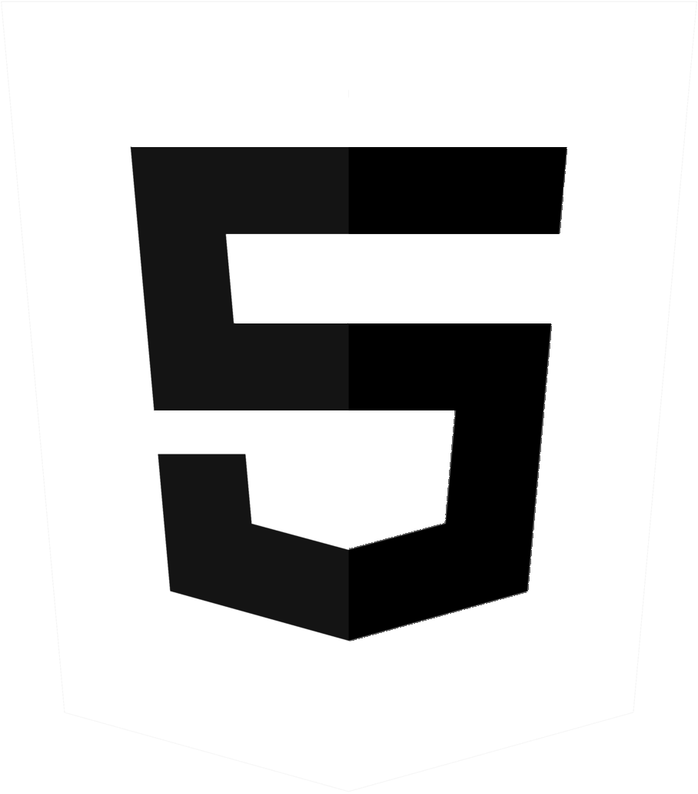

À Propos de Moi
Je m'appelle Jules Renaud-Grange, et ma philosophie est simple : Le travail est la clé du succès.
Mes objectifs professionnels :
À court terme : |
|---|
Je m'appelle Jules Renaud-Grange, et ma philosophie est simple : Le travail est la clé du succès.
Mes objectifs professionnels :
À court terme : |
|---|
Arrivée au lycée Diderot, Paris 19.
Spécialité SIN : Systèmes d'Information et Numérique.
Obtention du BAC STI2D avec mention très bien.
Début des études supérieures.
aujourd'hui :
Actuellement en 2ème année de BUT Informatique à l'Université Gustave Eiffel, je développe mes compétences et suis activement à la recherche d'un stage pour la fin de ma deuxième année.
Objectif :
Obtention de mon diplôme et poursuite de mes études vers un diplôme d'Ingénieur.
J'ai développé tout au long de mon parcours des compétences approfondies dans différents domaines, ainsi qu'une maîtrise avancée de la langue anglaise.
Python |
1 an d'expérience. La base. |
Java |
1 an d'expérience. Je maîtrise aussi JavaFX et SceneBuilder ! |
C |
1 an d'expérience. Pointeurs et structures de données. |
|  | |
C++ |
6 mois d'expérience. Utilisé avec des cartes Arduino, c'était cool. |
Linux Bash |
~4 mois d'expérience. .sh |
|  | |
HTML |
1 an d'expérience. Avec style. |
PHP |
1 an d'expérience. Toujours bindParam. |
Java |
Utilisé dans des projets. |
SQL |
2 an d'expérience. SELECT * FROM Université Gustave Eiffel |
Postgre |
1 an d'expérience. COMMIT; |
MySQL |
6 mois d'expérience. Mon préféré. |
Figma |
2 an d'expérience. Utilisé lors de la conception de plusieurs de mes projets. |
Suite |
Fréquemment utilisé. Documentation & Tableur. |
Esprit d'équipe :
Aisance à travailler sur des projets en équipe, tout comme en autonomie.
Organisation :
Utilisation des méthodes et outils d'organisation (Agile (SCRUM), Kanban, Gantt, tableau RACI...)
Communication :
À l'aise à l'oral, je sais exprimer mes idées clairement et me faire comprendre.
Résolution de problèmes :
Capable de résoudre des problèmes complexes en cherchant l'optimisation.
Créativité :
Ce petit côté artistique.
La reproduction en Python d'un ancien jeu d'arcade : Qix.
Les règles sont simples, capturer le plus de zones possibles,
mais des ennemis, tel que le Qix ou les Sparxs vont tenter de vous arrêter.
Réalisé avec Khephren Djelidi.
La reproduction en Java d'un jeu de plateau : Codex Naturalis.
Un jeu de carte demandant d'agrandir le plateau en placant les cartes dans les coins des autres.
On collecte des ressources permettant de poser des cartes dorées afin d'obtenir des points et gagner la partie.
Réalisé avec Randy Bou Jaber.
Un programme en Python permettant de faire des opérations sur des automates.
Contient différentes opérations tel que la déterminisation, la complémentation,
l'intersection ou la différence entre deux automates, les propriétés de fermeture
(automate préfixe, suffixe, facteur et miroir) et la minimisation.
Télécharger le fichier py : ici.
Réalisé avec Randy Bou Jaber.
Un programme en C permettant de faire des opérations sur des Polynômes.
Permet différentes opérations sur des polynômes de tous degrés, de sa valeur à x, sa dérivée ainsi que la somme ou le produit de deux polynômes.
Télécharger le fichier c : ici.
Réalisé seul.
Un site web réalisé en HTML/CSS & PHP lié à une base de données PostgreSQL.
Le site permet de visionner et de gérer (en tant qu'admin) tout ce qui touche à l'e-sport :
les joueurs, les équipes, les compétitions, les matchs...
Réalisé avec Benjamin Rissot.
Projet d'équipe d'un site internet sur la ville d'Alger en partenariat
avec l'UNESCO en HTML/CSS & PHP.
Présentation des différents aspects de la ville d'Alger : son histoire,
sa culture, son architecture et ses différents monuments.
Réalisé avec :
Khephren Djelidi,
Martial Carceles,
Daniel Dos Santos,
Loïc Rakotoniary et
Hélène Ralu--Leroy.

Projet d'équipe d'un site de rencontres amicales pour seniors en HTML/CSS & PHP lié à une base de données.
Un projet de qualité de développement qui s'est concentré sur l'étude des utilisateurs
et la définition des besoins.
Réalisé avec :
Martial Carceles,
Benjamin Rissot et
Jimmy Te.
Projet d'équipe d'un portail web pour la gestion des transactions bancaires en HTML/CSS, JavaScript & PHP lié à une base de données MySQL.
Un projet de qualité de développement qui s'est concentré sur l'application de la méthodologie agile SCRUM (travail par Sprints, backlogs, Kanban...) dont j'ai été le Scrum Master.
Réalisé avec :
Guillaume Augeraud,
Benjamin Rissot et
Andrei Achirecesei.
Installation et configuration d'un serveur DHCP qui a pour rôle d'attribuer automatiquement
des adresses IP aux différentes machines d'un réseau informatique, simulé sur Netkit.
Réalisé avec Antonin Lemaire et
Thomas Ngo.